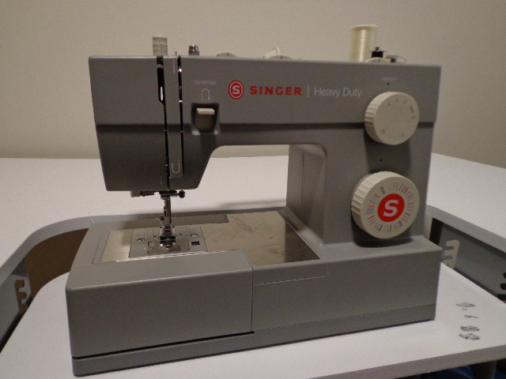
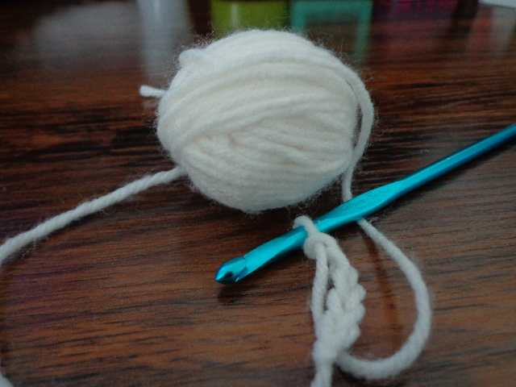
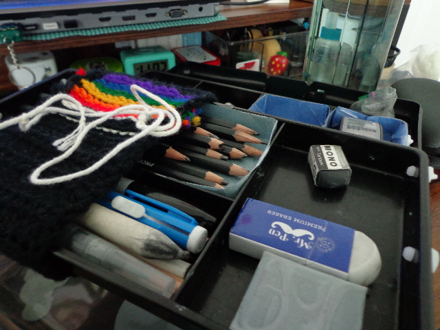
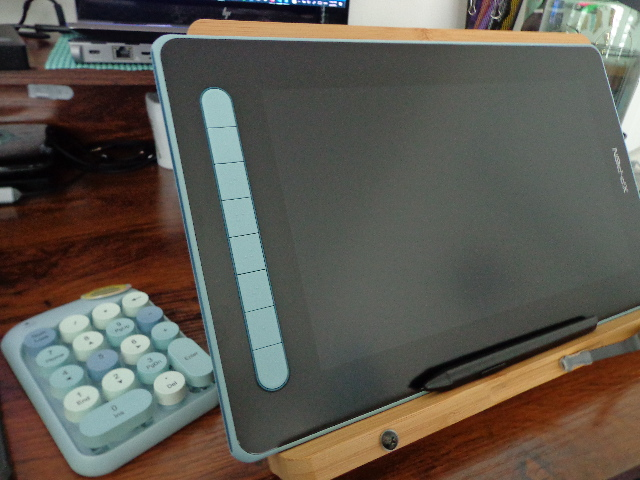

Sewing
While I haven't made enough sewing projects to warrant their own webpage, I do have some basic
skills in sewing. I made my own vest for Prom back in 2023 as well as a wizard costume for
Halloween.

Crochet
I actually have a few more yarn related hobbies besides crocheting, but crochet is was I feel
most comfortable with. I know one knit stitch, and I'm quite comfortable with tunisian crochet
since it uses one long crochet hook. I have a habit of making Amigurumi presents for friends and
family.

Physical Art
I've worked with acrylic paint, oil pastels, colored pencils and charcoal in the past; however,
my most recent art classes on working with graphite and charcoal or simply black and white. A
lot of my recent traditional artwork is still lives in graphite and charcoal.

Digital Art
I've been enjoying making digital art since I was twelve and doodling on my little phone; I've
since upgraded to a laptop and drawing tablet. I've been digitally painting and animating on
this guy for a couple years now!